O laboratório realizado consistiu em uma experiência prática de captura, edição e processamento de imagens e vídeos. Neste experimento os objetivos principais são capturar e visualizar imagens, bem como gravar vídeos, explorando ajustes de iluminação e configurações de filmadoras e dispositivos móveis. Através do uso de uma filmadora semi-profissional e um celular, otimizamos a qualidade das imagens e vídeos produzidos, além de termos realizado ajustes essenciais para garantir resultados de alta qualidade.
A qualidade da captura de imagem e vídeo depende de diversos fatores, como a iluminação, resolução e configuração da câmera. A utilização de luz direta e difusa, juntamente com a correção de temperatura de cor, é crucial para obter resultados nítidos e bem iluminados. Durante o experimento, foram testadas diversas disposições de câmera e iluminação a fim de obtermos o melhor resultado. Além disso, a escolha da resolução afeta diretamente a clareza e o tamanho do arquivo final.
a) Configuração da Filmadora Panasonic:
Foi realizado o posicionamento do refletor de iluminação de 50W com tela difusora para proporcionar luz direta adequada. Em seguida ajustou-se a luz de iluminação de LEDs para reduzir sombras indesejadas em fotos e vídeos. Então foi verificado e ajustado o viewport da filmadora para evitar cortes de luzes ou sombras indesejadas.
b) Configuração do celular:
Primeiro, foi posicionado o celular no suporte composto pelo tripé e iluminação. Então, ajustou-se a temperatura de cor e a intensidade da luz do anel de iluminação. Além disso, foram feitos ajustes na câmera do celular para garantir a captura de fotos e vídeos de alta qualidade.
Cada integrante realizou a captura de uma foto individual com a câmera. Em seguida, foram criadas montagens que combinaram cada foto individual com o respectivo avatar escolhido. Além disso, também foram captadas fotos de todo o grupo com ambas as câmeras.
Foi captado um vídeo incluindo mudanças rápidas e lentas de movimento com todos os integrantes do grupo. Para obtermos um melhor resultado, foi ajustado o posicionamento e enquadramento da câmera a fim de que cada integrante do grupo apareça.
a) Integrante Ana Paula Sales
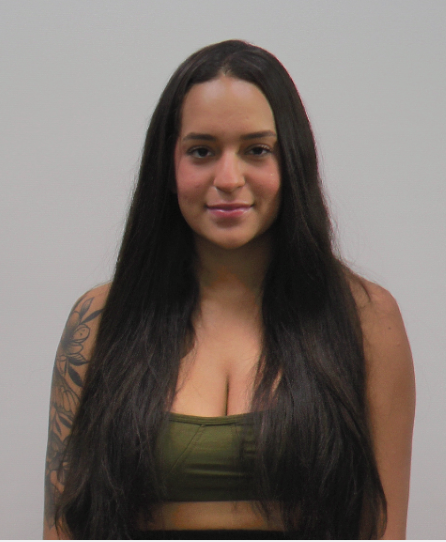 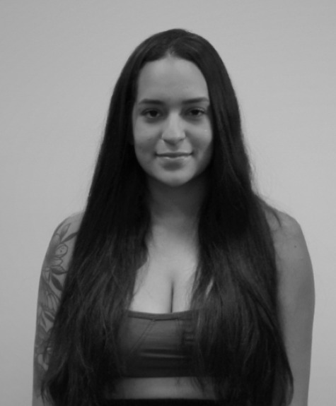 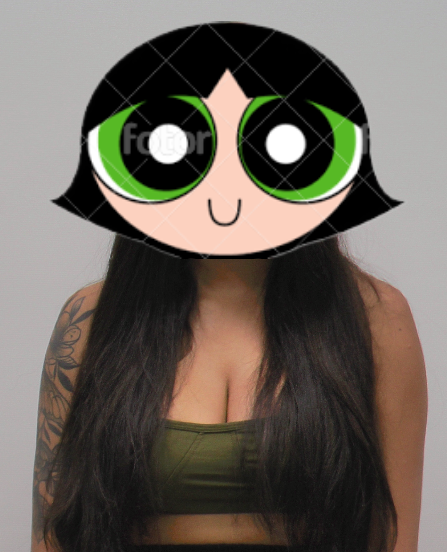 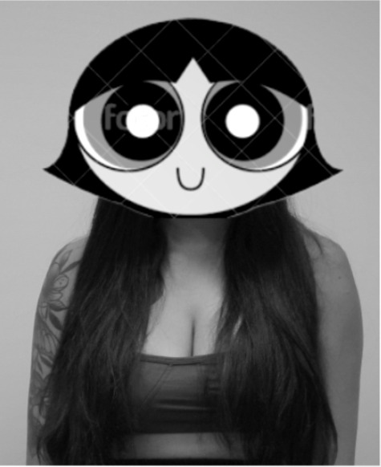b) Integrante Gabriel Mendonça
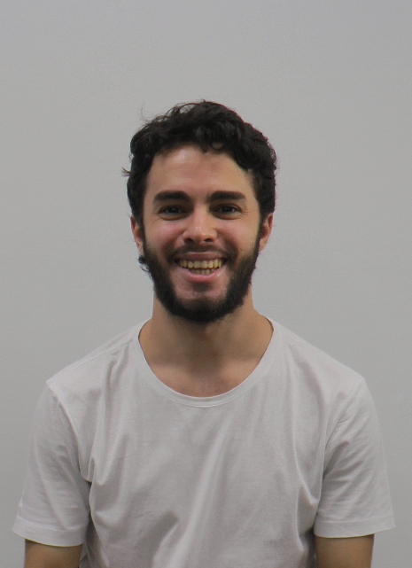 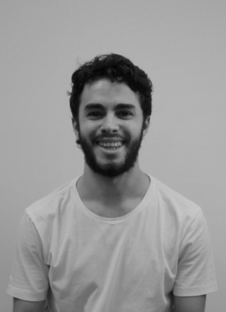 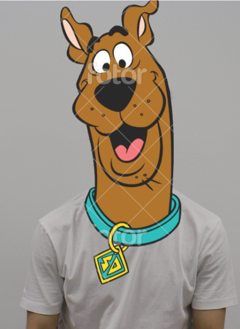 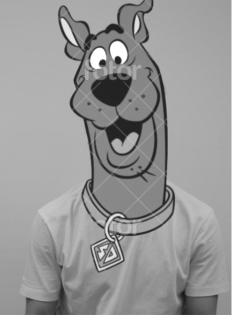c) Integrante Luísa Pataquini
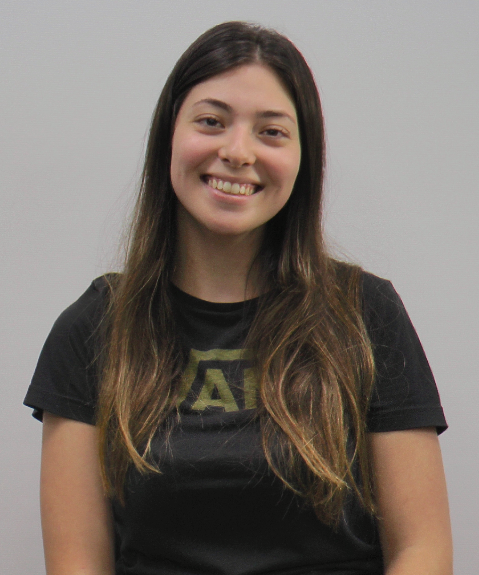 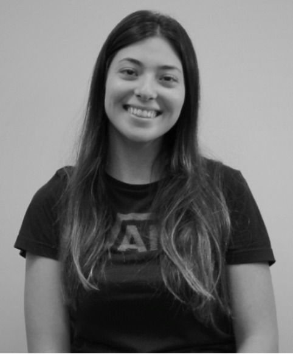 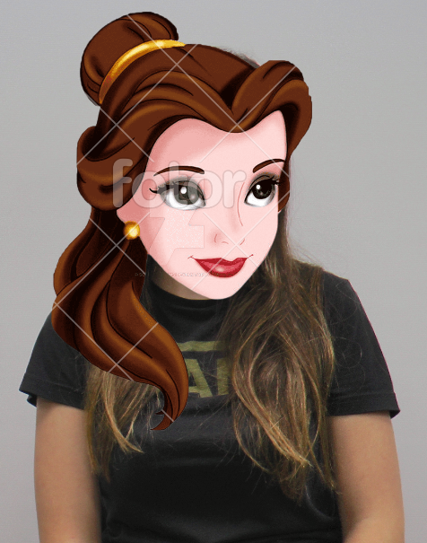 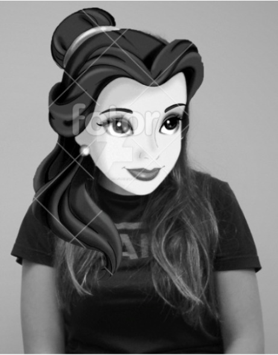d) Integrante Randre Cardoso
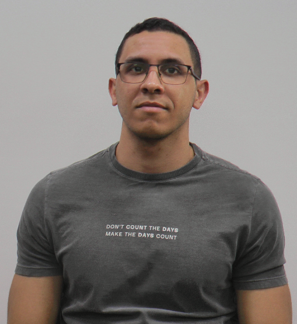 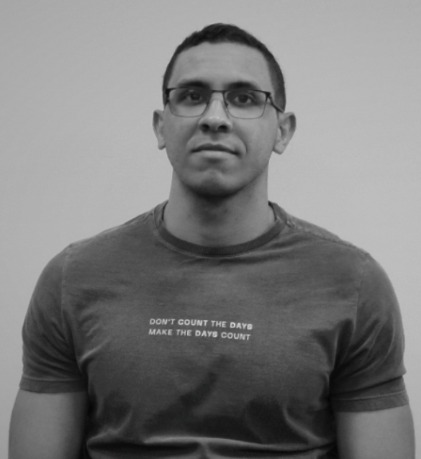a) Integrante Ana Paula Sales
b) Integrante Gabriel Mendonça
c) Integrante Luísa Pataquini
d) Integrante Randre Cardoso
e) Grupo
a) Integrante Ana Paula Sales
b) Integrante Gabriel Mendonça
c) Integrante Luísa Pataquini
d) Integrante Randre Cardoso
e) Grupo